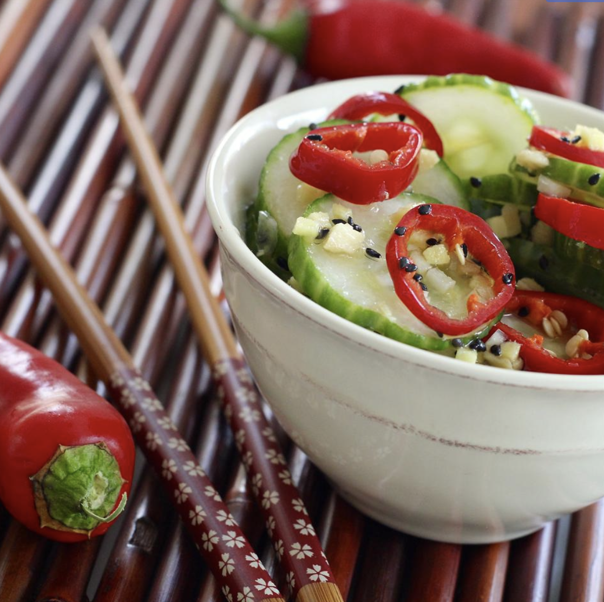

How to make a cucumber salad!

Description
This is a really delicious, light Asian cucumber salad.
Ingredients
- 2 cucumbers - halved lengthwise, seeded, and sliced
- 2 tsp of salt
- 0.5 cup of rice vinegar
- 0.25 cup of white sugar
- 2 tbsp of sesame oil
- 1 tbsp of minced garlic
- 1 tbsp of minced fresh ginger root
- 1 tbsp of sesame seeds
- 4 fresh red chile peppers, sliced
Steps
- Put the cucumber slices in a colander and sprinkle with salt;
set aside to drain for 1 hour.
- Whisk the vinegar and sugar together until the sugar is dissolved;
add the sesame oil, garlic, ginger, and sesame seeds; stir.
- Rinse salt off the cucumber slices by running under cold water;
place in a large bowl with the sliced red chile peppers.
Drizzle the dressing over the vegetables and toss to coat. Serve immediately.
Acknowledgements
Recipe from https://www.allrecipes.com/recipe/192623/asian-cucumber-salad/
Back to Home Page
Back to Top